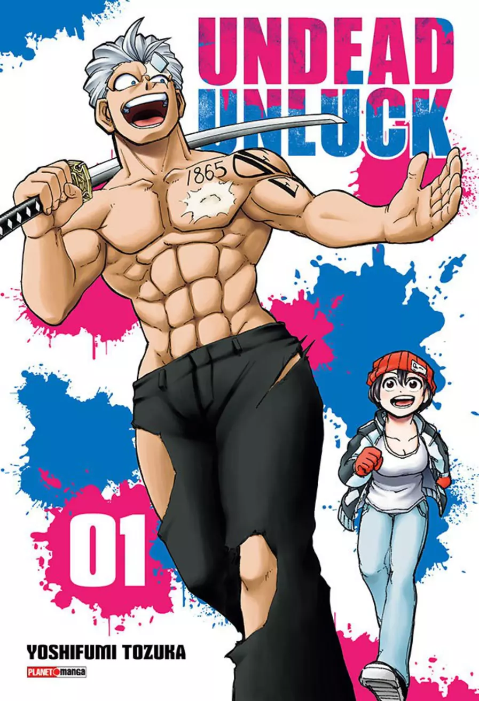

Animes Recomendados
one piece
é um anime que conta a história do jovem Monkey D. Luffy, que ganhou poderes de borracha depois de comer uma fruta do diabo.

Berserk
A história gira em torno do solitário Guts, um ex-mercenário e agora um espadachim amaldiçoado e forçado a vagar sem descanso para sobreviver e buscar vingança.

Undead Unluck
A jovem Fuuko estava decidida a morrer quando um homem misterioso com um corpo imortal surge diante dela! Andy
